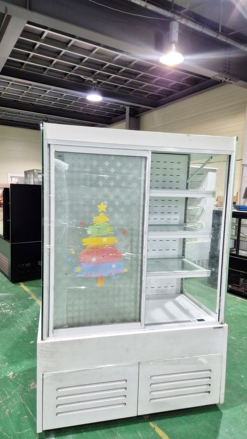
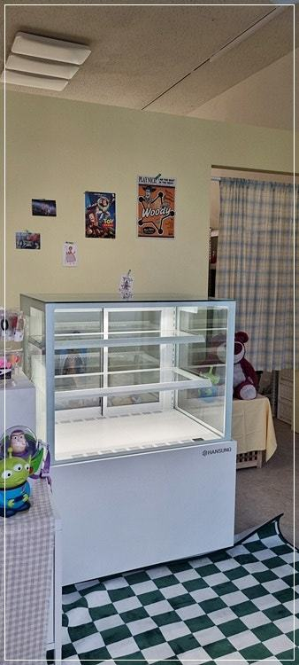
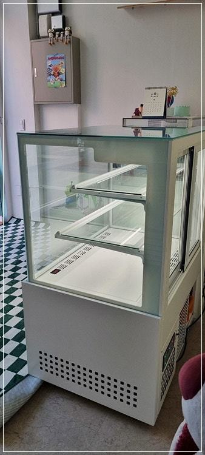
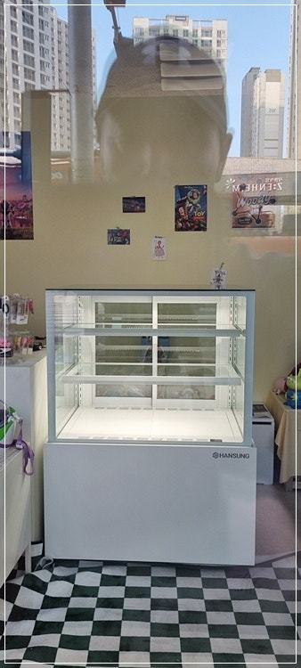
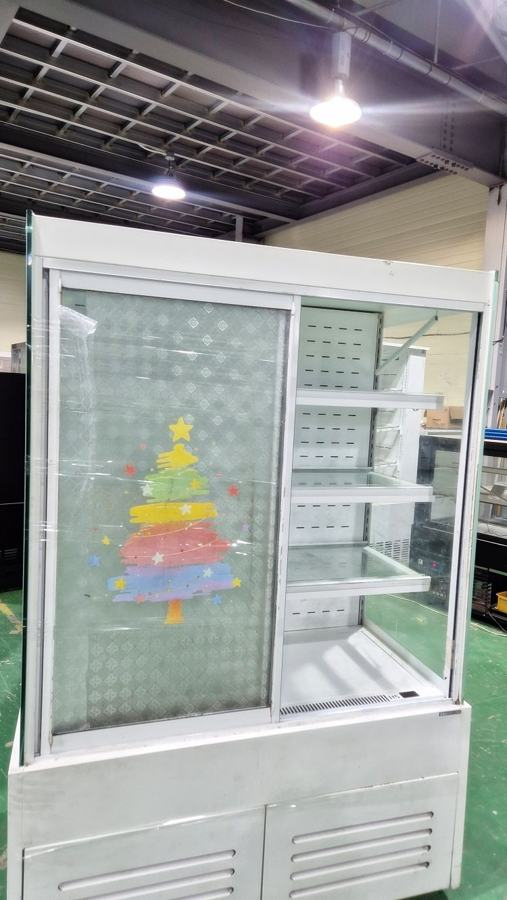
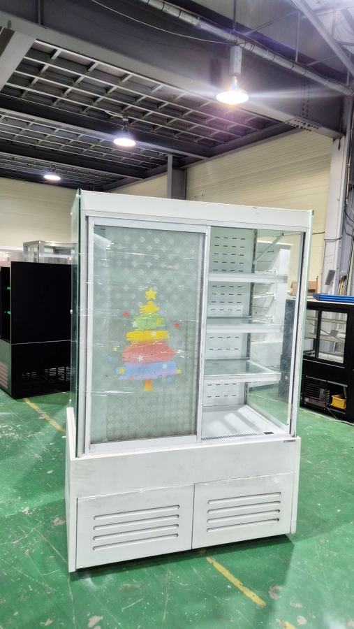
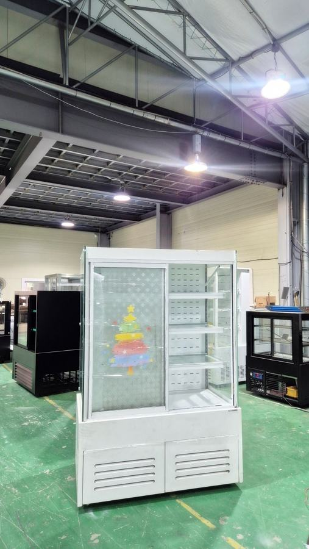

제과쇼케이스
제과쇼케이스 고장, 증상별로 먼저 확인할 것

제과쇼케이스가 이상하다면 증상을 먼저 구분하세요. 온도가 안 내려가면 기계실 먼지와 통풍, 유리 김서림은 매장 습도와 열선, 소음은 수평과 주변 간격부터 확인하고, 그래도 계속되면 어느 부위에 문제가 생겼는지를 A/S에 알려 수리와 교체를 판단하시면 됩니다.
안녕하세요. 베이커리와 디저트 카페의 제과쇼케이스를 만들고 설치 뒤 관리까지 맡는 한성쇼케이스입니다.
아침에 출근해 쇼케이스 온도계를 봤는데 숫자가 평소보다 높게 떠 있으면 마음이 철렁하시죠. 생크림 케이크와 무스는 몇 시간만 온도가 흔들려도 모양이 무너지니까요.
그런데 막상 A/S 기사님이 와서 보면 고장이 아니라 통풍구가 막혔거나 매장 습도가 높아 생긴 현상인 경우도 꽤 있습니다.
반대로 사소해 보이는 소리가 큰 고장의 신호일 때도 있고요.
오늘은 제과쇼케이스에서 자주 나타나는 증상별로 매장에서 먼저 확인할 부분, 그리고 수리와 교체를 판단하는 기준을 정리해 드리겠습니다.
1. 온도가 잘 내려가지 않을 때
가장 먼저 기계실 쪽을 보세요. 하단이나 상단 통풍구에 먼지가 쌓였거나, 빵 박스나 포장 자재가 앞을 막고 있으면 열이 빠지지 못해 냉각이 약해집니다.
오븐 바로 옆이나 햇빛이 드는 자리로 옮긴 적은 없는지도 떠올려 보세요.
문이 완전히 닫히지 않는 것도 흔한 원인입니다. 뒷문형은 바쁜 시간에 직원이 문을 살짝 열어 둔 채 일하기 쉽고, 패킹이 들뜨면 틈으로 냉기가 계속 샙니다.
- 통풍구 앞에 쌓인 물건과 먼지를 치워 보세요.
- 문 패킹이 들뜨거나 찢어진 곳이 없는지 보세요.
- 주변에 오븐 열기나 직사광선이 닿는지 확인하세요.
2. 유리에 김이 서리거나 성에가 낄 때
유리 바깥쪽에 김이 서린다면 매장 습도가 높거나 유리 열선이 약해진 경우가 많습니다. 비 오는 날이나 여름에만 생긴다면 매장 제습을 먼저 해 보세요.
날씨와 상관없이 늘 같은 자리에 생긴다면 열선 점검이 필요합니다.
내부에 성에가 두껍게 낀다면 제상이 제대로 되지 않거나 문 틈으로 습한 공기가 계속 들어오는 상황일 수 있습니다.
성에를 칼이나 도구로 긁어내면 냉각 부품이 상할 수 있으니 피해 주세요.


3. 소리가 커지거나 물이 샐 때
평소에 없던 덜덜거리는 소리는 바닥 수평이 틀어졌거나 뒷면이 벽에 닿아 진동이 전달되는 경우가 많습니다.
쇼케이스 다리를 살짝 눌러 흔들리는지 보세요. 쇠 긁히는 소리나 딸깍거림이 반복된다면 팬이나 콤프레셔 쪽 점검이 필요합니다.
바닥에 물이 고인다면 배수 호스가 꺾였거나 막힌 경우가 대부분입니다. 크림이나 빵 부스러기가 배수구로 들어가 쌓이기 쉬우니 정기적으로 확인해 주세요.
4. 수리할까, 바꿀까
고장이 나면 사용한 햇수부터 떠올리는 분이 많지만, 햇수만으로는 판단하기 어렵습니다. 조명이나 패킹처럼 소모품 문제라면 오래 쓴 제품도 부품만 바꿔 계속 쓸 수 있고, 몸체 단열이나 냉각 계통에 큰 문제가 생겼다면 교체를 검토하는 편이 낫습니다.
그래서 A/S를 요청하실 때는 증상이 언제부터, 어느 위치에서, 어떤 상황에 나타나는지 정리해 주시면 진단이 빨라집니다.
한성쇼케이스는 전국 240여 개 A/S 센터를 통해 접수받고 있습니다.
- 증상이 시작된 시점과 위치를 메모해 두세요.
- 온도계 수치를 사진으로 남겨 두세요.
체크리스트
- 통풍구 막힘과 기계실 먼지
- 문 닫힘 상태와 패킹
- 매장 습도와 유리 김서림 위치
- 바닥 수평과 뒷면 간격
- 배수 호스 꺾임·막힘
- 증상 시점·위치 메모
설치 때부터 관리 방법을 함께 안내한 제과쇼케이스 사례
이전에 설치해 드린 매장의 추천으로 연락을 주신 제과점입니다. 사전 미팅에서 매장 규모와 인테리어, 원하시는 분위기를 듣고 제과점 자리에 정확히 맞는 크기로 맞춤 제작했습니다.
제과가 돋보이도록 프레임은 화이트로, 조명은 주백색 LED로 넣었습니다.
제과를 잘 보이게 하는 게 가장 중요한 만큼 내부를 가리는 부분은 줄이고, 유리 접합부는 튼튼하게 마감했습니다.
배송과 설치는 전문 인력이 맡았고, 설치를 마친 뒤 사용 방법과 평소 관리 요령을 자세히 안내해 드렸습니다.
처음부터 관리법을 알고 쓰시면 고장으로 이어지는 작은 문제를 미리 잡을 수 있습니다.




| 구분 | 제과쇼케이스냉장고 |
|---|---|
| 규격 | 900*650*1200 |
| 프레임 | 화이트 |
| 조명 | LED 주백색 |
자주 묻는 질문
제과쇼케이스 온도가 갑자기 올라가면 먼저 무엇을 해야 하나요?
온도에 예민한 케이크와 크림류를 다른 냉장고로 옮기고, 통풍구 막힘과 문 닫힘 상태를 확인하세요. 그래도 회복되지 않으면 바로 A/S를 요청해 주세요.
유리에 김이 서리는 건 고장인가요?
습한 날에만 생긴다면 매장 습도 영향인 경우가 많습니다. 날씨와 상관없이 같은 자리에 계속 생긴다면 유리 열선 점검이 필요합니다.
오래 쓴 제과쇼케이스도 A/S를 받을 수 있나요?
네, 사용 기간보다 어느 부위에 문제가 생겼는지가 중요합니다. 증상을 알려 주시면 수리로 해결할 수 있는지, 교체를 검토해야 하는지 함께 판단해 드립니다.
매장 조건에 맞춰 만드는 한성쇼케이스
원하시는 제품 사진과 설치할 공간 사진만 보내 주셔도 매장에 맞는 구성을 추천해 드립니다.
- 전국 240여 개 A/S 전담 센터 운영
- 본사 대량 자재 매입으로 품질 대비 합리적인 가격
- 유럽제·삼성 냉각 콤프레셔 적용
- 국내 최초 쇼케이스 전문 디자이너 상주
매장 폭과 원하는 진열 구성을 알려 주세요. 실측과 견적을 안내해 드립니다.
031-986-2458